House ambient OFF / old washed WIP / new crisp
Same world anchors. Old WIP captures use interrupted filters; OFF uses final base grade. Current and maximum stages retain existing fallback assets.
current brokerage evening/sunny
Ambient OFFOld washed WIPNew crispcurrent tax evening/sunny
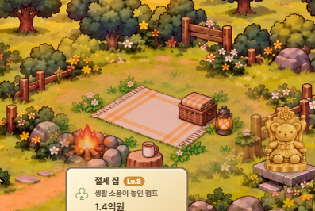
Ambient OFF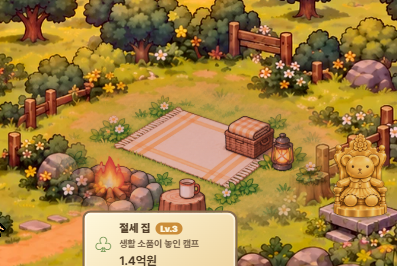
Old washed WIPNew crispcurrent brokerage night/sunny
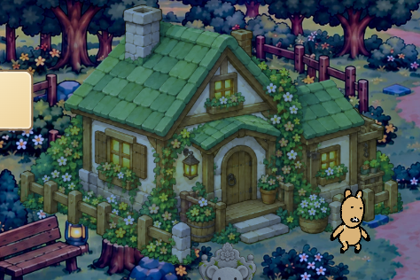
Ambient OFFOld washed WIP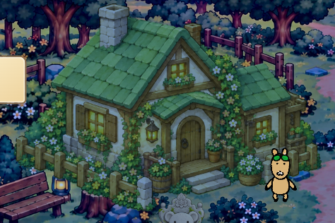
New crispcurrent tax night/sunny
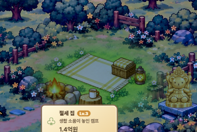
Ambient OFF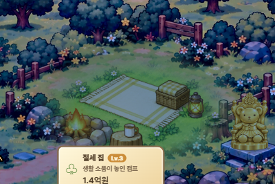
Old washed WIP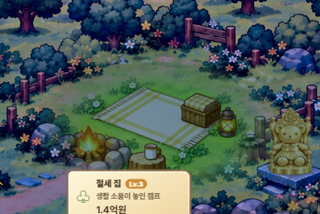
New crispcurrent brokerage night/thunderstorm
Ambient OFFOld washed WIPNew crispcurrent tax night/thunderstorm
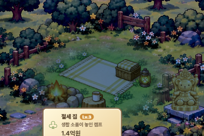
Ambient OFF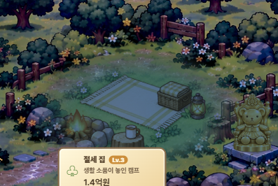
Old washed WIP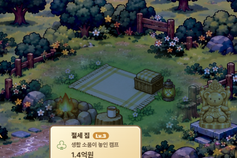
New crispmax brokerage evening/sunny
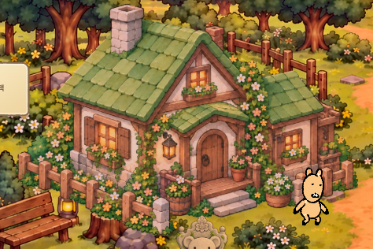
Ambient OFF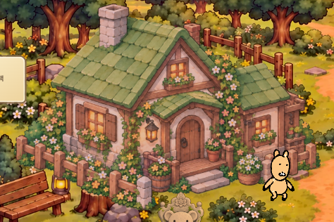
Old washed WIP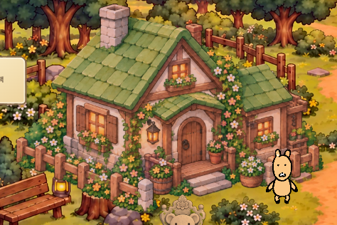
New crispmax tax evening/sunny
Ambient OFFOld washed WIPNew crispmax brokerage night/sunny
Ambient OFF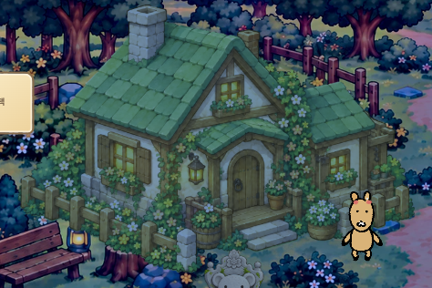
Old washed WIP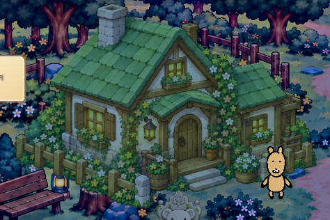
New crispmax tax night/sunny
Ambient OFF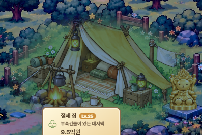
Old washed WIP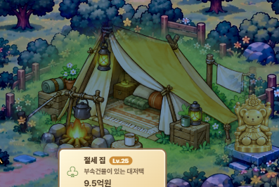
New crispmax brokerage night/thunderstorm
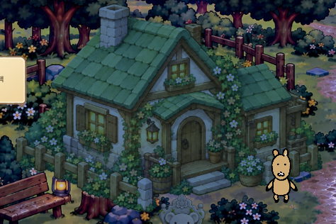
Ambient OFF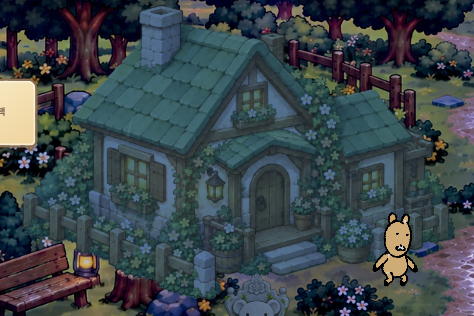
Old washed WIP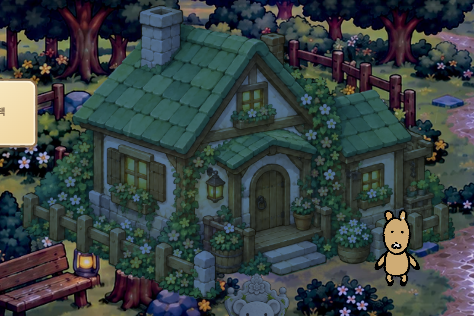
New crispmax tax night/thunderstorm
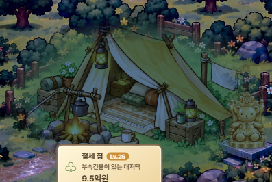
Ambient OFF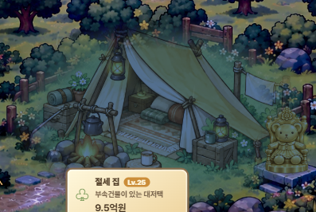
Old washed WIPNew crisp